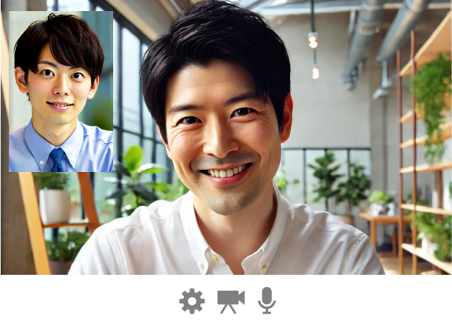
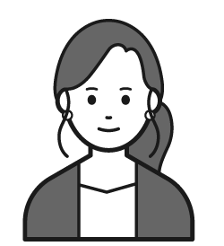

第三者による退職面談や相談の代行
「スピークマインド」
「スピークマインド」
第三者による退職者面談や相談代行で組織改善
退職理由の把握が難しいと感じている企業様に対して、第三者による退職者面談および、相談代行のサービスを提供いたします。
当サービスによって本音を話しやすい環境を作り、退職理由や悩みを丁寧に聞き出します。
収集した情報を改善レポートとして提案させていただくことで、具体的な対策を把握し、退職を未然に防ぐことや、社員の定着率を向上させることが可能です。
当サービスによって本音を話しやすい環境を作り、退職理由や悩みを丁寧に聞き出します。
収集した情報を改善レポートとして提案させていただくことで、具体的な対策を把握し、退職を未然に防ぐことや、社員の定着率を向上させることが可能です。

スピークマインドでできること
第三者面談により
従業員が言いづらい本音が分かる
強い秘匿性が保たれる仕組みで第三者が相談を聞きます。
これにより従業員は安心感を持って本音を話すことができます。
また土日祝、24時間どこでも相談可能なので相談者が話しやすい環境を提供することができます。
面談レポートから組織改善ができる
退職代行を使用されて退職されてしまうと退職者の本音が「退職するために企業が納得する理由」しか聞くことができません。
これを退職者も納得できるような退職代行を使わない仕組みを提供します。
詳しくは面談で説明させていただきます。
人事社員や管理職の面談工数の削減
退職面談や相談は肉体的な疲労だけでなく、精神的な疲労が多くたまります。
面談を多く実施することで組織の負の感情を一気に引き受け精神的にきついことがありますが、
これを弊社サービスが引き受けることで面談担当者の負担を大きく軽減させます。
面談時間を任せることでポジティブな関係性構築のためのお見送り面談や改善に時間を
割くことができるようになります。
スピークマインドならではの特徴
退職代行を使用されて退職されてしまうと退職者の本音が「退職するための企業が納得する理由」しか聞くことができません。
しかし弊社は退職者側も納得できるような退職代行を使わない仕組みを提供することができます。
詳しくはサービス説明の面談で説明させていただきます。

相談者は土日祝、24時間どこでも弊社に相談することができます。
これにより強い秘匿性を保ちつつ、相談者が本音を話しやすい環境を提供します。
また人事社員が勤務時間中に相談を受けることのできない時間や場所でも対応することができます。
第三者が退職の不満を聞くことで会社として退職者の意見と改善に投資をしており退職者も重要だと伝えるメッセージになります。
関係性を維持することができ、再雇用などに繋がることにもなります。
他社製品と比べて低価格でサービスを提供します。
最初の3回のインタビューは試用期間として無料で提供させていただきます。
詳しくはサービス説明の面談で説明させていただきます。
退職代行使用者からの声
Aさん、元メーカー勤務、新卒3年目に退職代行を使用
これが当時あればもしかしたら退職そのものも防げたかもしれない
- 第三者面談がすごい良い
- 退職代行を使った際は精神的に追い込まれていたので、土日に相談可能なのは非常に良いと思う
- 共有したくない人を指定できるのは非常に良い。上司に知られるのは別に良いが、相談していることを周りに知られるのは嫌なので良い
- オフレコが良い。感情的な批判はお互いのためにならないので削いでほしい
- 新卒で入った会社だったので退職代行を使った後は少し後悔した が、このようなサービスがあると退職後も関係を続けられるので非常に良い

Bさん、元介護士、新卒1年目に退職代行を使用
これを使えてたら退職代行ではなく「人間関係の悩みを聞く」をまず使う
- 第三者面談というのはすごい良い
- 24時間土日に相談可能が非常に良い
- 共有したくない人を指定できるのはすごい良くて、会社に勤めると強みを見せないといけないことが多く弱みをみせれないのですごい良い
- オフレコ機能がすごい良い。相談したことに対する報復も怖いので
- 第三者に話して絶対に知られたくない人には知らせない状況を知っていたら本音を話す
- このサービスを新卒で使えてたら、人間関係で苦労したので部署移動できるとありがたい

Cさん、元営業事務、新卒1年目に退職代行を使用
第三者の人が返してくれるのは相談する人に寄り添っているサービスで良い
- 人事の人に直接言うのには勇気がいるなということも第三者の人が返してくれるのは相談する人に寄り添っているサービスで良い
- 新卒からこのサービスが通知されていたら相談機能から使うと思う
導入までの流れ
→
→
→
お問い合わせ情報の入力
お問い合わせ画面から、必要な情報をご入力の上、お申込みください。
弊社にて内容を確認後、ご入力いただいたメールアドレスにご連絡いたします。
お客様にサービス説明
対面またはオンライン会議でサービスの説明をさせていただきます。
ご興味があれば業務のヒアリングもさせていただきます。
必要であればお見積書などを作成させていただきます。
NDA、契約書の締結
ヒアリング結果から、秘密保持契約、契約書を要望に沿った形で作成し、締結させていただきます。
無料の試用サービスを提供
退職者面談は最初の3回は無料となっているので、まずは試用サービスから提供させていただきます。
試用サービスが終了した後にサービスを終了することも可能ですのでご安心ください。
よくある質問
自社で行う退職者面談との違いは？
第三者が面談を行うことで、会社に言いずらい本音を退職者が話すことができます。
通常の退職者面談や退職代行による退職は退職者の目的が企業に退職を納得してもらい速やかに退職することであるため、
会社の課題を直接伝えないことが多いです。
しかしこの課題は企業側が改善することのできるものもあり、
改善することで退職を防いだり競合他社との競争に負けない要因になります。
またしっかりと本音を話してもらうことで退職者との信頼関係が生まれ、再雇用にも繋がります。
また土日祝や24時間どこでも相談可能であるため、
人事社員が勤務時間中に相談を受けることのできない時間や場所でも対応することができます。
退職者の本音は聴ける？
第三者が秘匿性を保ちながらインタビューを行うことで、本音を話しやすい環境を提供することができます。
また時系列順に動機を整理することで退職者が気づいていなかった重要な企業の課題や本音を聞くことができます。
解決できない不満ばかりでは？
すべての課題を解決する必要はありません。
重要なのは課題を抽出して重要な課題に優先順位をつけて対策することです。
退職者の不満がすべてが正しく解決すべきものではありません。
退職者が多く組織の維持が困難になってくると全ての課題に対応できないのは当たり前で、
課題に対して冷静に対処する必要があるため第三者による退職者レポートが客観的かつ冷静に対応させることができるようになります。
既にレポートや質問の雛形がある場合は合わせることはできますか？
すでにレポートの雛形や質問フローがある場合は柔軟に合わせることができます。
ご要望のあるカスタマイズは柔軟に対応できますので、ヒアリングの際に詳しくお伝え下さい。
面談を任せると従業員や退職者との関係維持ができないのでは？
退職の場合は、第三者が退職の不満を聞くことで会社として退職者の意見と改善に投資をしており退職者も重要だと伝えるメッセージになります。
退職面談後に人事や経営層がレポートを受け取ったら、事実を確認して、
今まで退職面談に使っていた時間の代わりに簡単なお見送り面談を行うことで関係性を維持することができ、
再雇用などに繋がることにもなります。
既存従業員の相談の場合、退職してしまう前に課題を抽出することができるので対策をすることができるようになり、
相談した従業員から会社への信頼も高くなります。